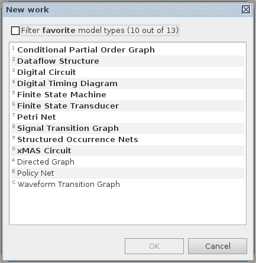
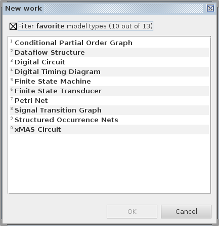

help:core:new_work
New work dialog
The New work dialog can be open via File→Create work.. menu or via Ctrl+N keyboard shortcut. It presents the user with a list of supported models and enables creation of a work of a selected type:

There are several ways to create work of a specific model type – use the one most convenient for you:
- select a model type and press
OK(it becomes enabled once a model type is selected); - double-click a model type;
- use a keyboard shortcut (a numbers/letters to the left of the model type name).
If only the favorite model types are of interest, then select the Filter favorite model types checkbox at the top of the dialog and all the other model types will be filtered out:

The initial state of the filter checkbox and the favorite models can be defined in Common→New work favorites section of global preferences accessible via Edit→Preferences… menu.